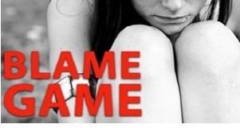

پذيرش > تریبون > مقالات > کی می خواهیم بپذیریم که قربانیِ تجاوز نه یک شیء جنسی در دسترس یا دور از دسترس که یک (...)


 کی می خواهیم بپذیریم که قربانیِ تجاوز نه یک شیء جنسی در دسترس یا دور از دسترس که یک آدم است؟ کی می خواهیم بپذیریم که قربانیِ تجاوز نه یک شیء جنسی در دسترس یا دور از دسترس که یک آدم است؟
22 تیر 1390 - - نسخه قابل چاپ
تغییر برای برابری: در ماجرایی که هم به واسطه ی جزییاتش و هم به واسطه ی پوشش خبری آغازین هول انگیز است، بیش از یک دوجین مرد جوان اهل کلیولند تگزاس متهم به تجاوز سریالی به دختری 11 ساله هستند و این تجاوزها گویا از اکتبر تا دسامبر سال 2010 ادامه داشته است. این از موارد نادری است که اعتراض به پوشش خبری تبعیض آمیز رسانه ها درباره ی یک مورد تجاوز گروهی به دختری خردسال شکل پتیشنی بین المللی می گیرد.
12 متهم به تجاوزی که بیش از 18 سال دارند و انتشار تصاویرشان طبق قوانین ایالت تگزاس بلامانع بوده است. تصویر آخری مربوط به کاراوانی است که تجاوزها عمدتا در آن صورت گرفته.
ماجرا حسب المعمول تبعات معضل ساز دیگری هم – باب دندان رسانه های جنجالی – دارد. از آن جا که دختر هیسپانیک است و مردان افریقایی- امریکایی، این پرونده شهر محل وقوع جرم، کلیلوند را که شهر کوچکی در فاصله 45 مایلی هوستن، مرکز تگزاس، و با جمعیتی حدود 9000 نفر است چند پاره کرده و به خشونت نژادی کشانده. دامنه این خشونت، در سطح مردم عادی به صورت دعواهای لفظی و اظهار نظرهای مشمئز کننده و در سطح مقامات قضایی به مواردی از جانبداری های غیر انسانی از متجاوزان به سراسر ایالات متحد کشیده شده. قربانی اینک گویا تحت سرپرستی است و پدر و مادر او که مهاجر مکزیکی اند به واسطه تهدید مکرر به انتقام گیری مجبور به ترک خانه و زندگی خود شده اند.
تحقیقات قضایی درباره ی این تجاوزات دسامبر سال گذشته شروع شد، وقتی یکی از همکلاسی های قربانی به معلمی گفت که فیلمی تکان دهنده را روی گوشی تلفن همراهی دیده که در آن تعدادی مرد به دوستش در یک کاراوان متروک تجاوز می کرده اند. مقامات محلی می گویند دختر از اواسط سپتامبر تا اوایل دسامبر دست کم در 5 موقعیت مختلف مورد تجاوز گروهی قرار گرفته است، و گاهی تعداد متجاوزان 7 یا 8 نفر بوده. سن متهمان از دانش آموز سال های اول دبیرستان تا مردان 26 ساله متنوع است و شامل دو قهرمان ورزشی در دبیرستان محلی و همچنین مردانی با سوابق جنایی مختلف می شود.
اکثر مردان با اتهام تجاوز به یک کودک رو به رو هستند و دانش آموزان با اتهام سوء استفاده جنسی مکرر از یک کودک. بیشتر آن ها اظهار بی گناهی کرده اند و به قید ضمانت آزادند، در حالی که یک نفر، مارکوس پورچیای 26 ساله، پس از دستگیری به اتهام تجاوز به دختری دیگر در پرونده ای دیگر راهی زندان شده.
بنا به حکم دادگاه متهمان از هرگونه اظهار نظر در این مورد منع شده اند. اما، طبق شهادتنامه ای که از تعدادی فیلم و عکس به عنوان مدرک نام می برد، نخستین بار قربانی دعوت جوانی 19 ساله را برای گشتی با ماشین زدن در شهر می پذیرد. مرد جوان او را به خانه اش می برد و با تهدید وادارش می کند که برهنه شود و همراه با چند جوان دیگر به او تجاوز می کند. سپس، با آمدن زنی از بستگان پسر به خانه، او را به کاراوان متروک می برند و در این میان عده ای دیگر را هم خبر می کنند و تجاوز ادامه می یابد. تعدادی از آن ها از این صحنه ها با گوشی هاشان فیلم می گیرند.

وقتی خبر به رسانه ها می رسد، نحوه ی پوشش خبری و جانبداری آن ها از متجاوزان باعث برانگیختن واکنش جامعه ی مدنی می شود که همچنان ادامه دارد. جانبداری ها از فاجعه ای خبر می دهند به نام "فرهنگ تجاوز"، فرهنگی که رسانه ها، پا به پای خانواده ها و مراکز آموزشی، نقش کمی در ترویج آن ندارند. یک مورد بارز آن پوشش خبری نیویورک تایمز از این تجاوز گروهی است. تمرکز این مقاله روی واکنش جامعه ی کوچک شرق تگزاس به این تجاوز، بی احساس، جانبدارانه و در جهت سرزنش قربانی است، در حدی که از نشریه ای معتبر انتظارش نمی رود. اینجا تجاوزکنندگان به صورت "پسران" معقولی که "به این ماجرای هولناک کشیده شده اند" تصویر می شوند و توصیف از دختر این است که بزرگ تر از سنش نشان می دهد و "لباس هایی می پوشد و آرایشی می کند که بیشتر مناسب دختران 20 ساله است". هرچند اکنون متجاوزان دستگیر شده اند و محاکمه شان از 6 ژوییه شروع شده، پوشش خبری همچنان قربانی یا خانواده ی او را بیشتر از متجاوزان مورد اتهام قرار می دهد، انگار نه انگار که آن ها به دختری 11 ساله بارها تجاوز کرده اند و در ضمن از او فیلم هم گرفته اند و بین دوستان و آشنایان خود در این شهر 9000 نفری پخش کرده اند. تبعیض آمیز بودن این برخورد وقتی بیشتر آشکار می شود که درمی یابیم قربانی، "دانش آموز ممتاز مدرسه و دوستی فداکار برای هملاسی هایش بوده و از اکتبر ببعد خود را از اکثر فعالیت های فوق برنامه مدرسه کنار کشیده ". برندا می یر Brenda Myers، مدیر مرکز تعامل جامعه و کودکان کلیولند در 6 ژوییه در مصاحبه با ای بی سی می گوید که "او تا اکتبر دختری بسیار شاد و معاشرتی بود، اما از آن ببعد همیشه گرفته بود." وقتی خانم می یر از او می پرسد ناراحتی ات چیست، جواب می دهد "یک چیزی است که نمی توانم به شما بگویم." اما، قبل از دستیابی به این اطلاعات، چیزی که واکنش ها و اعتراض به مقاله نیویورک تایمز در شکل یک پتیشن بین المللی را دامن زد وحشت از بی حسی رسانه ها و عدم توجه مطلق آن ها به این مسئله ی ساده است که قربانی این تجاوزهای هولناک شیء جنسی در دسترس یا دور از دسترس نیست و دختر کوچولویی است که با این تجاوزها زندگی اش برای همیشه تباه شده.
رسانه ها پس از اعتراضات کمی برخوردشان را اصلاح کرده اند، اما همچنان به حواشی می پردازند، از جمله خانواده ی قربانی، که گفته می شود بسیار فقیر و بیمارند. معلوم نیست این مسئله چه ربطی به تجاوز گروهی به یک دختربچه دارد؟
با توجه به موارد متعدد تجاوزهای مشابه در کشورهای مختلف جهان، و صرف نظر از نتیجه ی این محاکمه ی بخصوص، آگاهی به چند و چون "فرهنگ تجاوز" ی که جوامع ما را بیمار کرده از طریق نگاهی دقیق تر به مصداق های آن می تواند کمکی باشد به درمان.
از جمله ی نخستین واکنش های مؤثر در نقد بخش های تبعیض آمیز مقاله ی نیویورک تایمز، که وجوه اشتراک زیادی با نگاه های معمول در رسانه های فارسی زبان دارد، مقاله ای در وبلاگ خواهر شکسپیر Shakespeare’s Sister است، که می نویسد، "هرچند که داستان هولناکی است، اما یک نمونه ی ناب "فرهنگ تجاوز" است ... به پاراگراف چهارم مقاله که می رسیم دیگر اطلاعات کافی و مثبتی از متجاوزان داریم؛ قربانی هنوز جز جنس و سنش فاقد هر ویژگی است. خبرنگار نیویرک تایمز، جیمز مک کینلی James McKinley، از زنی نقل قول می کند که از فکر این که "این پسرها باید تا آخر عمر بار این ماجرا را به دوش بکشند" ناراحت است. البته ضایعه ی روحی ناشی از مورد تجاوز گروهی 20 نفری قرار گرفتن در مقایسه بی اهمیت نشان داده شده است."
"بدتراز همه، توصیف از قربانی به روشنی می خواهد القا کند که او شخصی منحرف بوده است. او در ماه های قبل از ماجرا به حوالی کاراوان رفت و آمد داشته و آن جا " دوستانی را می دیده" ، و گاهی هم در حوالی زمین بازی محله و با پسران نوجوان می پلکیده . به نظر زنی که در بالا از او نقل قول شده، این یعنی که گناه این تجاوزها به گردن مادر دختر است."
"او (از خبرنگار نیویورک تایمز) می پرسید، "مادرش کجا بود؟ مادرش چه فکر می کرد؟ چطور می توانی بگذاری یک دختر 11 ساله تو این محله ها گم و گور شود؟"
مقاله ی نیویورک تایمز سپس می پردازد به شرح اوضاع اقتصادی اسف بار این شهر کوچک، و فضای غمبار داخل کاراوان. این زاویه ی دید خواننده را ترغیب می کند که به جای پرداختن به ماجرای جنایت هولناک یک گروه مرد بالغ و نابالغ علیه یک دختربچه، برای شهر کوچک و این که به شدت تکان خورده است دل بسوزاند. متجاوزان اغلب قربانی قلمداد می شوند، و خودِ قربانی غایب است. کلمه "تجاوز" خیلی کم در مقاله به کار می رود، و از این واقعیت که دختر11 ساله نمی توانسته است "رضایت" داده باشد یک کلمه هم حرفی در مقاله نیست، و تراژدی این نیست که دختری 11 ساله در معرض خشونتی ناگفتنی قرار گرفته، بلکه این است که (به گفته ی یکی) شهر نمی داند چگونه واکنش نشان دهد.
مقاله ی هوستن کرونیکل Houston Chronicle هم همین قدر بد است. آن جا سیندی هورسول Cindy Horswell در مورد مطالب صفحه ی فیس بوک قربانی می نویسد ، "گاهی دختری است خردسال، مثلا وقتی که از استعداد خاص خودش در درآوردن "صداهای عجیب و غریب" و "دور چرخیدن های سرگیجه آور" برای غلبه بر عصبانیتش حرف می زند. اما در ضمن حرف های گنده ای هم درباره ی مشروب، سکس و سیگار می زند. با وجود این، از میان این پوشش سخت، آسیب پذیری اش خود را نشان می دهد، وقتی می گوید که "بارها آزار دیده است"، جایی که "توقعش را به حداقل رسانده" و می گذارد "مردم سوء استفاده کنند" و "همه جور بدرفتاری با او بکنند". او با خودش عهد می بندد که "از اشتباهاتش درس بگیرد".
همان طور که مارگرت هارتمن Margaret Hartmann در جزبل Jesebel می نویسد، "انتشار اطلاعات خصوصی مانند این اگر شخص بالغ باشد هم غلط است، و در مورد قربانی ای که "گاهی دختری است خردسال " سزاوار ملامت، “چون او دقیقا همین است”... این فکر که او باید از اشتباهاتش درس بگیرد بسیار توهین آمیز است. بی محابا این معنی را می رساند که او به واسطه ی اعمال خودش مورد تجاوز قرار گرفته."
تنها یک برخورد قابل قبول با این نوع پوشش خبری وجود دارد، آن هم ابراز انزجار است. چنان که لیز هنری Liz Henry می نویسد، "رسانه ها گزارش می دهند که او چگونه لباس می پوشد، و شهر در باره این که او چطور لباس می پوشد، کجاها می پلکد، و آیا در صفحه فیس بوکش فحش می دهد یا نه، چه فکر می کند... چیزهایی کاملا بی ربط به این که او ربوده شده و مورد تجاوز گروهی وحشیانه قرار گرفته".
این داستان درباره ی کودکی است که مرد بالغی او را ربوده و وادار به رابطه ی جنسی با تعداد زیادی مرد کرده است. این اعمال ضبط شده و برگشته به دست دوستان کودک در مدرسه ی ابتدایی. این ها آن رویدادهایی است که مک کینلی و هورسول و سایر خبرنگاران باید درباره اش بنویسند – نه درباره ی شهر که دوره ی افول اقتصادی خود را می گذراند، و مسلما نه درباره ی این که در و همسایه راجع به قربانی و مادرش چه فکر می کنند.
پوشش خبری تبعیض آمیز رسانه ها در ضمن به حرکت دیگری هم دامن زد، و آن "دعوت به عمل: اعتراض مردان علیه پوشش خبری تبعیض آمیز رسانه ها در مورد تجاوز جنسی " به عنوان واکنشی به اخبار رسانه ها درباره تجاوز گروهی به دختری 11 ساله که از ماه مه شروع شد، اما بیانیه و حرکت ها بیشتر در آوریل که ماه آگاهی نسبت به تجاوز جنسی است صورت گرفت. در این کمپین که صفحه ای هم در فیس بوک دارد، سازمان های مختلفی عضویت دارند و خواست شان این بود و هست که رسانه ها بجای آن که به طرز لباس پوشیدن قربانیان بپردازند نورافکن هاشان را به آن جایی بتابانند که باید، یعنی روی متجاوزان. در بیانیه ی که گروه های مردان منتشر کرده اند و در Male Voice می توانید متن کامل آن را بخوانید، آمده که ماجرای تگزاس و پوشش رسانه ای که خشم آن ها را برانگیخته استعاره ای قوی درباره ی سکوت و همدستی فراهم می آورد. در بیانیه سوال شده، "در حالی که تجاوز گروهی صرفا با مداخله ی یک مرد می تواند متوقف شود، چطور می توان به دنیایی دلخوش بود که در آن حتی یک مرد – یا بیشتر- قدم به میان نگذاشت تا این تجاوز را متوقف کند؟ آیا ما مردها در حضور هم چنان مرعوب می شویم که صدای مان حفه می شود؟ قلب مان از تپش باز می ماند؟ نمی توانیم به مادران یا دختران مان، خواهران مان، یا همسران مان فکر کنیم؟"
بیانیه اعتراض به نیویورک تایمز را اینجا ببینید.
منابع:
http://www.care2.com/causes/11-year-old-girl-gang-raped-by-18-men-in-texas.html#ixzz1RhueakAY
www.shakespearssister.blogspot.com
www.voicemalemagazine.com
ارسال به
بالاترین
،
توییتر
،
فریندفید
،
فیسبوک
در همين بخش :
 دهمین دورۀ مراسم تندیس صدیقه دولت آبادی ۱۳۹۲ دهمین دورۀ مراسم تندیس صدیقه دولت آبادی ۱۳۹۲
کارت پستالهایی به بهانهی هشت مارس و به یاد همهی مبارزین راه برابری
بیانیه بیش از 350 تن از مدافعان حقوق زنان به مناسبت روز جهانی زن؛ زنان هر روز فرودستتر میشوند
لباسی که برای تن ما دوخته اند! /اعظم بهرامی
چالشها و چشمانداز فعالیت مدنی زنان
ديگر بخش ها :
طرح یک میلیون امضا
|
مقالات
|
سایت نوشته ها
|
اخبار
|
گزارش كمپين
|
گفت و گو
|
علیه سکوت
|
كوچه به كوچه
|
نامه های شما
|
گزارش ویژه
|
گفتگو با اعضا
|
ویژه سالگرد کمپین
|
تصویر برابری
|
دل آرام علی
|
تریبون
|
مقالات
|
تاریخ شفاهی
|
خارج از چارچوب
|
کتابخانه
|
درباره کمپین
|
کمپین در شهرها
|
کمپین در بند
|
صدای تغییر
|
ویژه 22 خرداد
|
لایحه حمایت از خانواده
|
گالری
|
عشا مومنی
|
امیر یعقوبعلی
|
خدیجه مقدم
|
راحله عسگری زاده و نسیم خسروی
|
پروین اردلان،جلوه جواهری، مریم حسین خواه، ناهید کشاورز
|
زینب پیغمبرزاده
|
سعیده امین، سارا ایمانیان، محبوبه حسین زاده، ناهید کشاورز و همایون نامی
|
احترام شادفر
|
نسیم سرابندی زاده،فاطمه دهدشتی
|
وبلاگ مهمان
|
پرونده خرم آباد
|
دستگیری ها
|
مریم مالک
|
پرستو اللهیاری
|
مهرنوش اعتمادی
|
سمیه رشیدی
|
Other Languages
|
همراهان
|
«فراخوان کمپین ده روز با بهاره هدایت»
| English
|